In this course we use the R programming language for statistical computing and graphics, The purpose of this laboratory exercise is to develop familiarity with programming in R.
This lab provides an introduction to the R programming Language and the use of R to perform statistical and programming tasks. As with all lab reports, your answers will either take the form of R functions or short written responses. The R functions should be stored in an R script file (‘.R’ extension). To allow me to evaluate your work more efficiently, please name your R script using the following convention: “[your first name]_[your last name]_lab1.R”. So my submission would be “kevin_shoemaker_lab1.R” (all lower case).
Please include only the requested functions in your submitted R script. That is, the R script you turn in should only include the custom R functions you constructed to answer the questions, and none of the ancillary code you used to develop and test your functions. You will probably want to complete the lab exercises using a ‘full working version’ of your script (that includes all your work, including code for testing your solutions), and then save a reduced copy (containing only the requested functions and nothing more) for submission. Ask your instructor if you’d like a demonstration of how this works!
Before submitting your code using WebCampus, please clear your environment and run the script you will submit (containing only the requested functions) from start to finish. Check the ‘Environment’ tab in RStudio after running your script, and make sure that the script ONLY defines functions within your global environment- no other objects (data, values, etc.). The script you submit should generate no additional objects (e.g., data frames), it should not read in any files. Don’t put a ‘clear workspace’ line (e.g., ‘rm(list=ls()))’ anywhere in your submitted code- unless you want to make life difficult for the instructor…
Submit your R script (functions only) using WebCampus. Follow the above instructions carefully!
Submit short-answer responses using WebCampus. In addition to submitting your script, you will need to respond to additional questions using the Lab 1 “quiz” interface on WebCampus.
Please submit your R script and complete the WebCampus quiz by midnight on the due date (one week after the final lab session allocated for this topic). You can work in groups but submit the materials individually. Refer to WebCampus for due dates.
This lab exercise (Lab 1) will extend over two laboratory periods.
Take some time to get more familiar with R!
This is the only lab period we will devote to learning R- after this we will assume you have proficiency with defining variables and functions, reading in datasets, visualizing data, etc. in R.
From the R manual, ‘Introduction to R’ you can implement all the steps in Appendix A, located here. This takes you far but without much explanation– it is a way to jump into the deep end of the pool.
Alternatively, or in addition, go to the Links page and pick a tutorial to run through (e.g., the Datacamp introductory R course, which uses the ‘tidyverse’ packages). You can also check out the materials from my R “bootcamp” archive.
Before you move on, make sure you have a basic understanding of how to work with R and RStudio. If you are working with someone who has used R before, don’t be afraid to ask questions! Take your time with this- you might want to use the entire lab period on this if you have never used R before - it will be time well spent!
Another useful introductory R tutorial can be found here, courtesy of NCEAS. If you haven’t used R before, consider working through this tutorial before going through the lab exercises.
If you already have basic R expertise, you can move ahead!
Here we will get warmed up for the lab exercises.
Write a function that takes a numeric input vector and computes the sum of all its elements.
Basically, all you need to do here is write ‘sum(x)’ where it says ‘[add code here]’
NOTE: you don’t need to submit this as part of your lab report! This is just practice…
# demo function (not part of lab)
myfunc <- function(x){
# [add code here!]
}To gain some familiarity with using R scripts and developing algorithms, complete the following exercise (you don’t need to submit this demo as part of your lab write-up BUT you will be asked to use this code as part of exercise 1 (below).
Review the meaning of the Central Limit Theorem, which states that the sum (or mean) of a sufficiently large number of independent and identically distributed random variables will form another random variable that is asymptotically normally distributed (as the number of elements added together approaches infinity), regardless of the distribution of the underlying data. One of the key implications is that the sample mean (sum of iid random variables divided by the sample size) will be normally distributed with mean equal to the mean of the data distribution and variance equal to the variance of the data distribution divided by the sample size:
\[X \sim any \;distribution(mean=\mu, var=\sigma^2)\]
Note that, although the normal distribution is the only distribution that is fully determined by its mean and variance, all all probability distributions have a mean and variance (although some distributions ‘misbehave’ and have infinite mean and/or variance!).
\[ \bar{X}= \frac{1}{N}\sum_{i=1}^N X_i\] \[\bar{X} \xrightarrow{D} Normal(\mu,\frac{\sigma}{\sqrt{N}})\]
Type (or paste) the following code into your R script window (or RStudio script window):
# CENTRAL LIMIT THEOREM demonstration ------------------------
N <- 10 # sample size
lots <- 1000 # placeholder representing infinity
## Define the random number distribution. ------------------
runif(N,10,20) # try uniform random number generator with min of 10 and max of 20.
many_samples = replicate(lots,runif(N,10,20)) # do it many times!
many_xbars = colMeans(many_samples)
hist(many_samples,freq=F,ylim=c(0,1),main="",xlab="Value") # plot out the distribution of sample means
hist(many_xbars,freq=F,add=T,col="red") # overlay the distribution of the underlying data from which we are drawing samples.
legend("topleft",fill=c("gray","red"),legend=c("data population","sample means"),bty="n") # add a legend to the plot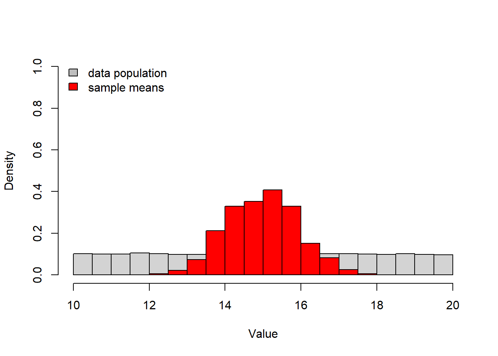
source("CentralLimitTheorem.R") # run the R script from a different script!
NOTE: The hash (#) used in the above code allows you to insert comments adjacent to snippets of code, which facilitates readability of code (and lets the programmer remember later on what he/she was thinking when coding things a certain way!). It is good practice to comment every line of code so as to describe what it does in plain English, including all variables and functions. Make sure you fully understand the commented code for the CLT demonstration above!
?qqnorm # learn more about the "qqnorm()" functionPlot the q-q plot next to the histograms. The plot on the left should be the comparison of histograms (for population distribution and distribution of sample means) shown in the original script (above). The plot on the right should be the q-q plot. To produce side-by-side plots, you will need to add this line of code to the appropriate place in your script:
# Set graphical parameters for side by side plotting -------------
par(mfrow=c(1,2)) # sets up two side by side plots as one row and two columns
## or alternatively...
layout(matrix(1:2,nrow=1))In addition, run a Shapiro-Wilk normality test, which tests the null hypothesis that a set of numbers (in this case the vector of sample means) indeed comes from a normal distribution (so what does a low p-value mean??). Use the “shapiro.test()” function:
?shapiro.testSo… what can you conclude from these tests??
Finally we have arrived at the ACTUAL lab exercises. Remember you don’t need to submit any of the work up to this point.
For the first part of this lab, you are asked to write several functions (and submit them as part of your lab script, of course!). The functions increase quickly in complexity!
You should now know how to construct functions in R. If you don’t, go back to the NCEAS tutorial and review the section on writing functions.
Write an R function called “CoefVar()” that takes a numeric vector (named ‘x’ within the function but could have any name outside the function) as input, and computes (and returns) its coefficient of variation (CV; standard deviation as a proportion of the mean). To make sure it works, apply your function to the ‘Height’ vector in the ‘trees’ dataset that installs with R as sample data:
You can use the following code to test your function using the built-in ‘trees’ dataset.
# Testing your code ------------------------
# Explore the "trees" dataset
#?trees
summary(trees) # learn more about the data## Girth Height Volume
## Min. : 8.30 Min. :63 Min. :10.20
## 1st Qu.:11.05 1st Qu.:72 1st Qu.:19.40
## Median :12.90 Median :76 Median :24.20
## Mean :13.25 Mean :76 Mean :30.17
## 3rd Qu.:15.25 3rd Qu.:80 3rd Qu.:37.30
## Max. :20.60 Max. :87 Max. :77.00trees$Height # extract the "Height" column from the trees dataset.## [1] 70 65 63 72 81 83 66 75 80 75 79 76 76 69 75 74 85 86 71 64 78 80 74 72 77
## [26] 81 82 80 80 80 87CoefVar(trees$Height) # run your new function!## [1] 0.08383964Write a function called “DrawLine()” for drawing a regression line through a scatter plot. This function should be specified as follows:
As a test, apply this function to the ‘Height’ (x axis) and ‘Volume’ (yaxis) vectors in the ‘trees’ dataset, and then to the ‘waiting’ (x axis) and ‘eruptions’ (y axis) vectors in the ‘faithful’ dataset.
#DrawLine(trees$Height,trees$Volume)
# ?faithful
# summary(faithful)
## ggplot version:
DrawLine(faithful$waiting,faithful$eruptions) # test your function using the old faithful eruptions data## `geom_smooth()` using formula = 'y ~ x'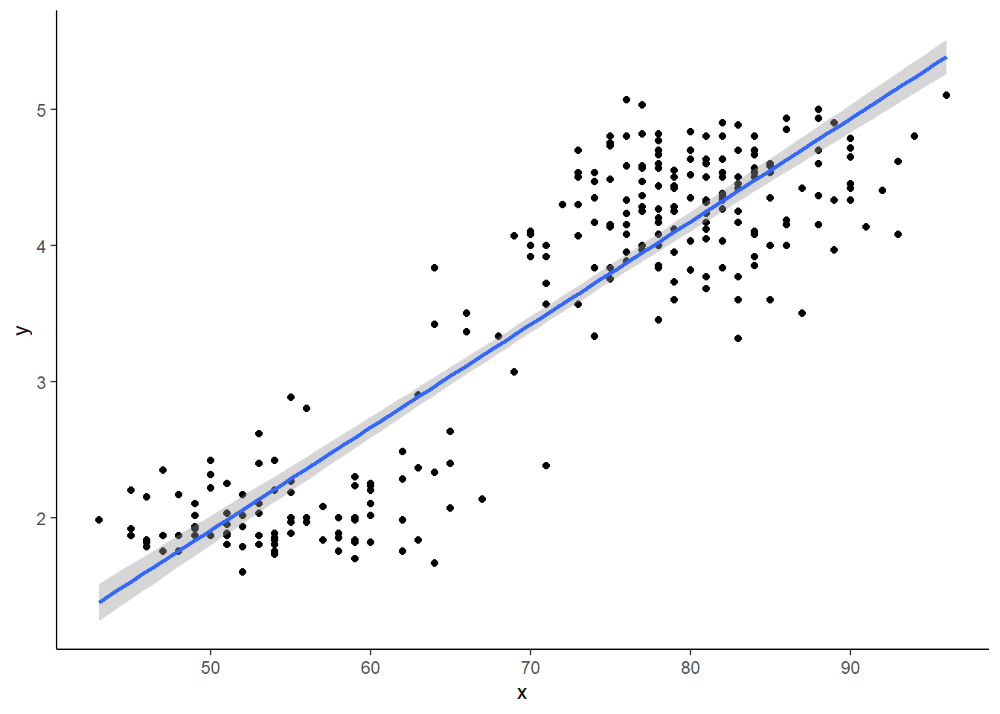
## (Intercept) x
## -1.87401599 0.07562795## base R version:
DrawLine_base(faithful$waiting,faithful$eruptions)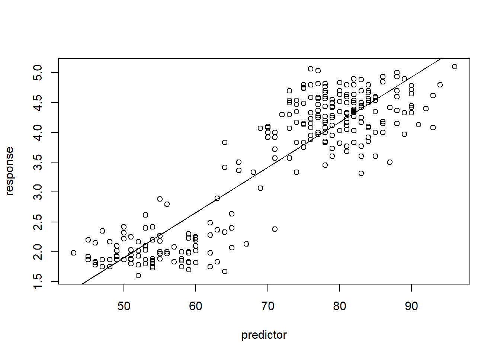
## (Intercept) x
## -1.87401599 0.07562795Write a function called “DrawLine2()” for drawing a “smoothed” regression line through a scatter plot, making the smoothing span (degree of smoothness, or non-wiggliness of the line) a user-defined option. This function should be specified as follows:
Try testing your function using the trees and faithful datasets!
xvec <- c(1:10)
yvec <- rnorm(length(xvec),c(2:6,7:3),2)
DrawLine2(xvec,yvec,smooth=T,span=0.5) # run your new function!## `geom_smooth()` using formula = 'y ~ x'## Warning in stats::qt(level/2 + 0.5, pred$df): NaNs produced## Warning in max(ids, na.rm = TRUE): no non-missing arguments to max; returning
## -Inf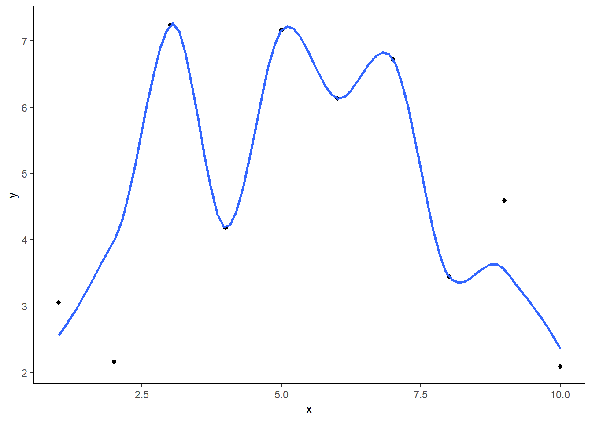
## Call:
## loess(formula = y ~ x, span = span)
##
## Number of Observations: 10
## Equivalent Number of Parameters: 8.49
## Residual Standard Error: 5.028DrawLine2(x=trees$Height,y=trees$Volume,smooth=F)## `geom_smooth()` using formula = 'y ~ x'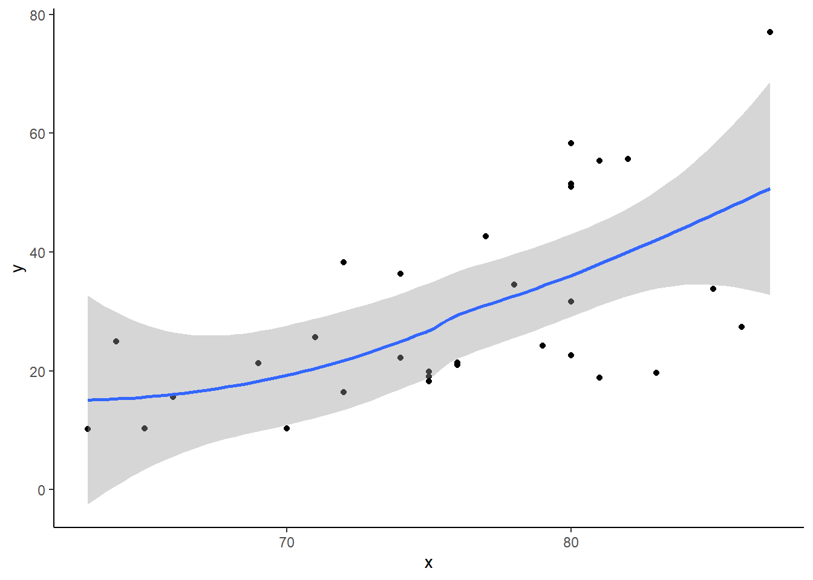
## (Intercept) x
## -87.12361 1.54335DrawLine2(faithful$waiting,faithful$eruptions,smooth=T,span=.5) # test using the old faithful eruptions data## `geom_smooth()` using formula = 'y ~ x'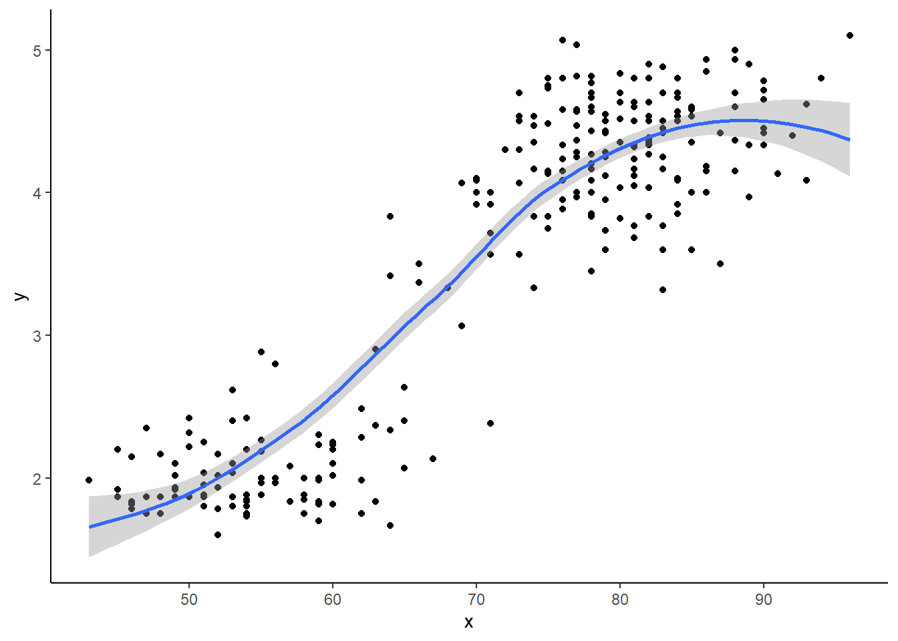
## Call:
## loess(formula = y ~ x, span = span)
##
## Number of Observations: 272
## Equivalent Number of Parameters: 6.71
## Residual Standard Error: 0.3731DrawLine2(faithful$waiting,faithful$eruptions,smooth=T,span=1.9)## `geom_smooth()` using formula = 'y ~ x'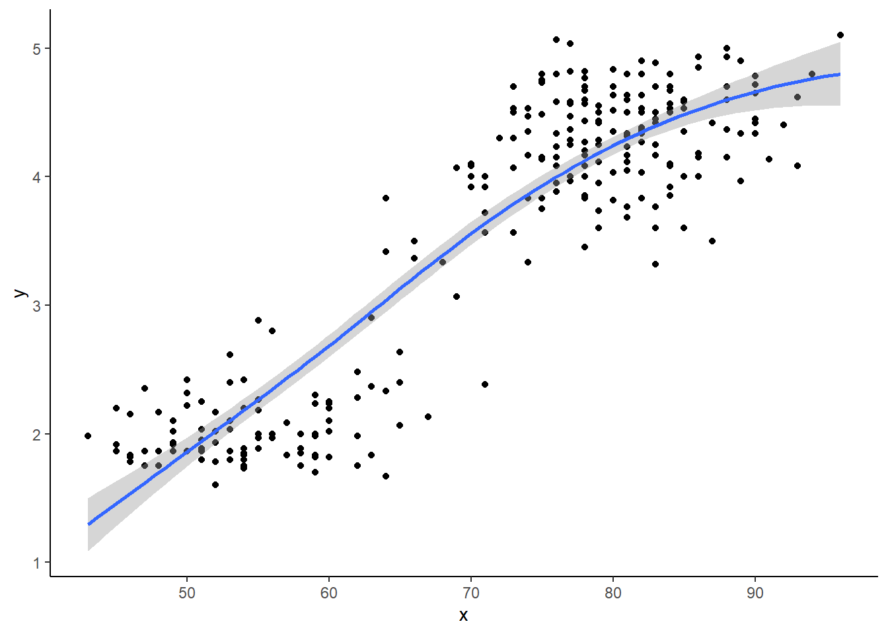
## Call:
## loess(formula = y ~ x, span = span)
##
## Number of Observations: 272
## Equivalent Number of Parameters: 3.08
## Residual Standard Error: 0.4639Write a function called “CLTdemo()” based on the central limit theorem (CLT) demonstration code above. This function should be specified as follows:
And you can test your code with the following command:
CLTdemo(3,10,20) # run your new function!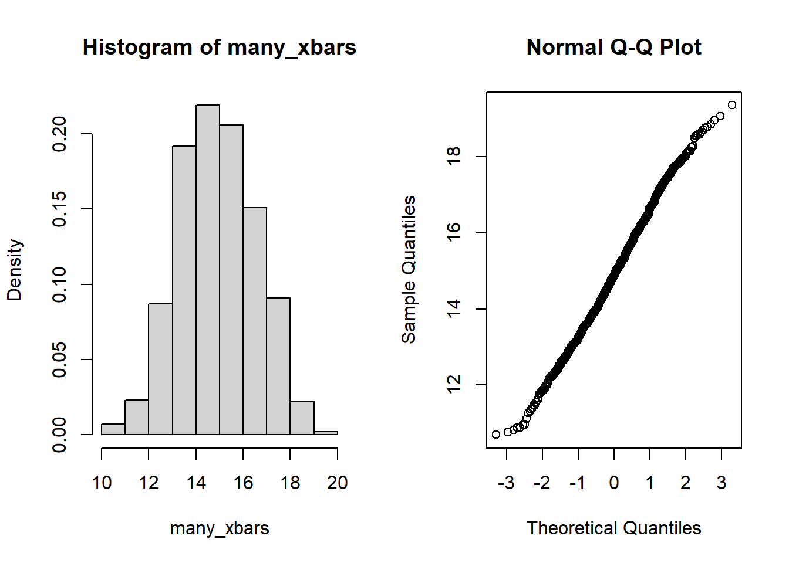
## [1] 0.006422794 ## you might want to replicate this many times...
replicate(5,CLTdemo(3,10,20,visualize=F)) # for example, replicate 5 times## [1] 0.02666252 0.22219402 0.14816431 0.04354325 0.01335300Finally, test the CLT function out for different parameter combinations to make sure it works! See if you can use this function to develop a reasonable rule for how large a sample size is necessary to ensure that the sample mean statistic (\(\bar{X}\)) is normally distributed given that the underlying data population is a uniform distribution.
Use your “CLTdemo” function to develop a rule for how large a sample size (N) is needed to ensure that the sample mean is normally distributed, given that the underlying data follows a uniform distribution. Please justify your answer!
Please submit your answer in WebCampus- and please justify your answer! [note: I am just looking for a thoughtful response, not a definitive mathematical proof! Just a few sentences is fine.]
NOTE: to set default values, just use the equals sign when defining your function. For example, say I wanted to write a function that adds the numbers in vector input ‘x’ OR adds a scalar input ‘y’ to each element of vector ‘x’. With only 1 input (‘x’) the function will sum up the elements in ‘x’. If the user specifies two arguments (x and y) then the function will add y to each element of x. It might look something like this:
newsum <- function(x,y=NULL){
if(is.null(y)) sum(x) else x+y
}
newsum(5:10) # use default value of y## [1] 45newsum(5:10, 2) ## [1] 7 8 9 10 11 12Try setting some alternative default values and re-running the function with and without arguments until you are sure you understand how default values work!
Before we start with the exercise, here is some background:
library(help = "datasets") # list of sample datasets that come with R
?airquality # this is the dataset we'll work with in this exerciseExamine the ‘airquality’ dataset (use the ‘head’ and ‘summary’ functions). Note that there are missing values where ozone concentration data and solar radiation data were not collected.
We could ignore the missing values and just go ahead with our regression analysis, since the default response of the “lm()” (‘linear model’) function is to omit cases with missing values in any of the specified parameters. However, to avoid problems later, we will omit them explicitly by constructing a new, ‘cleaned’ dataset as follows:
air_cleaned <- na.omit(airquality) # remove rows with missing dataConduct a multiple linear regression of ozone concentration as a function of solar radiation, wind and temperature. Use the ‘lm()’ function to conduct an ordinary least squares (OLS) regression analysis.
Explore the regression outputs using the ‘summary’ function, and explore regression diagnostics:
par(mfrow=c(3,2))
plot(model1, which=c(1:4)) # diagnostic plots (NOTE: the 'plot()' function returns these plots by default when the input is a linear regression model)
hist(residuals(model1), breaks=10) # histogram of residuals
plot(predict(model1) ~ air_cleaned$Ozone) # plot predicted vs observed- should follow 1:1 line. Examine this for model biases.
abline(0,1)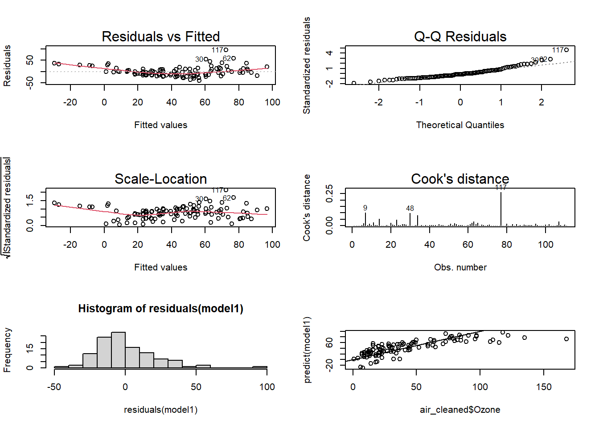
NOTE: see this website for more information on the diagnostic plots produced by lm().
coplot(air_cleaned$Ozone~air_cleaned$Temp|air_cleaned$Solar.R,rows=1) # the "|" operator can be read "conditional on"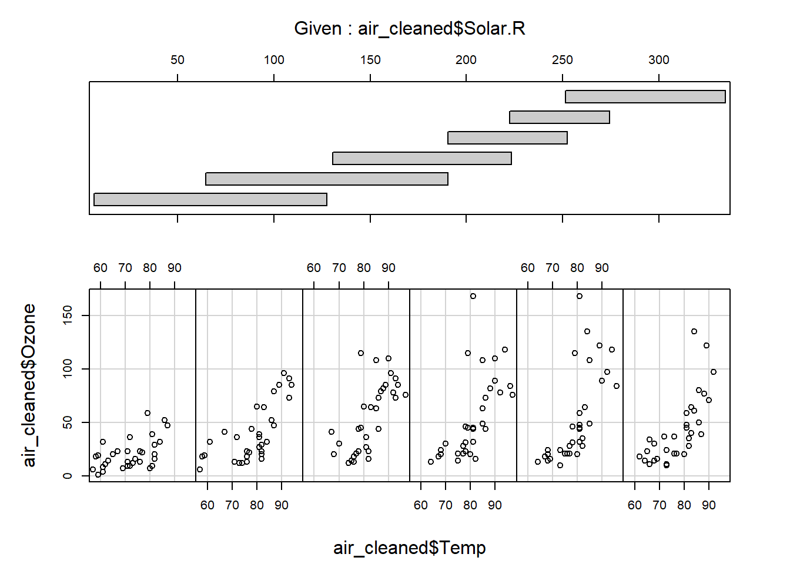
# alternatively, you can use ggplot
library(ggplot2)
ggplot(air_cleaned,aes(Temp,Solar.R)) +
geom_point(aes(size=Ozone))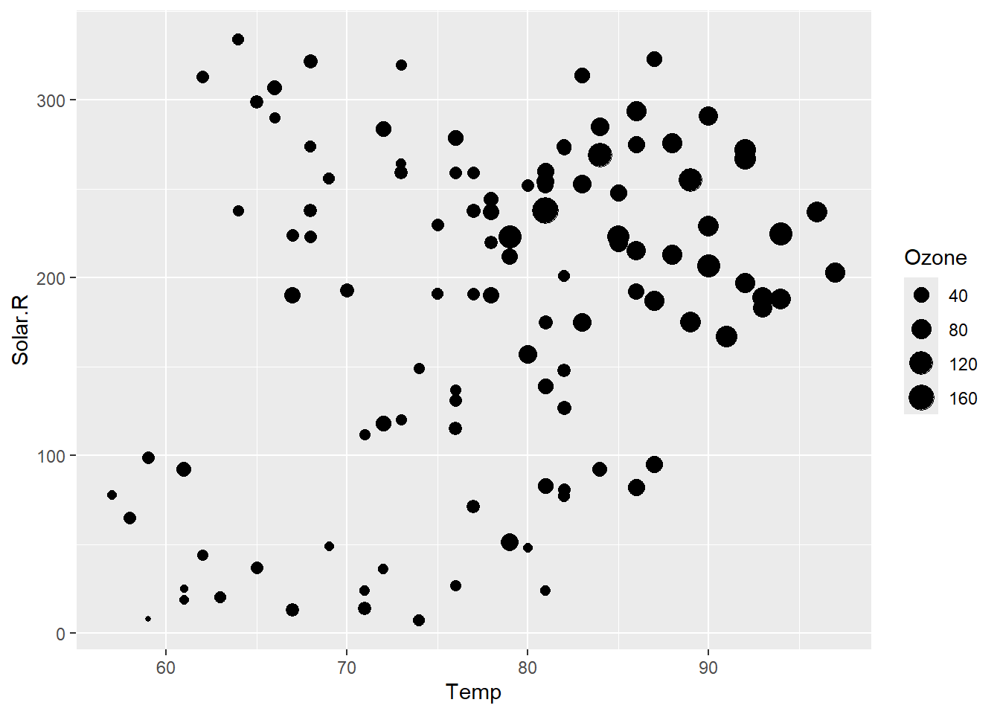
formula2 <- "Ozone ~ Wind + Solar.R * Temp" # you can name formulas...Explore regression diagnostics and coefficients for the second model in the same way as you did for the first model without the interaction term.
Conduct a test to formally test whether the more complex model (including the interaction term) fits the data significantly better than the reduced model (with fewer parameters) that lacks the interaction term. Recall that the \(R^2\) value is inadequate for this purpose because \(R^2\) will always increase with additional parameters! Use the following syntax,
anova(model1, model2, test="Chisq") Very briefly (but in complete sentences) answer the following questions in WebCampus:
By how much (and in what direction) is ozone concentration expected to change if temperature increased from 26 to 30 degrees Celsius? Assume that solar radiation stays constant at 200 lang and wind speed stays constant at 9 mph. Be careful with the units for temperature! Make sure to use the ‘interaction’ model (model2) from part 7 above to answer this question. Please briefly explain (in WebCampus) how you got your answer.
Briefly, what is the null hypothesis that the p-values for the individual regression coefficients are designed to test?
Based on your diagnostic plots, do you think this is an appropriate model for these data? Explain your reasoning.
Which of the predictor variables you included in your model is the most important in predicting ozone concentration? Explain your reasoning.
##
## Attaching package: 'cowplot'## The following object is masked from 'package:ggeffects':
##
## get_title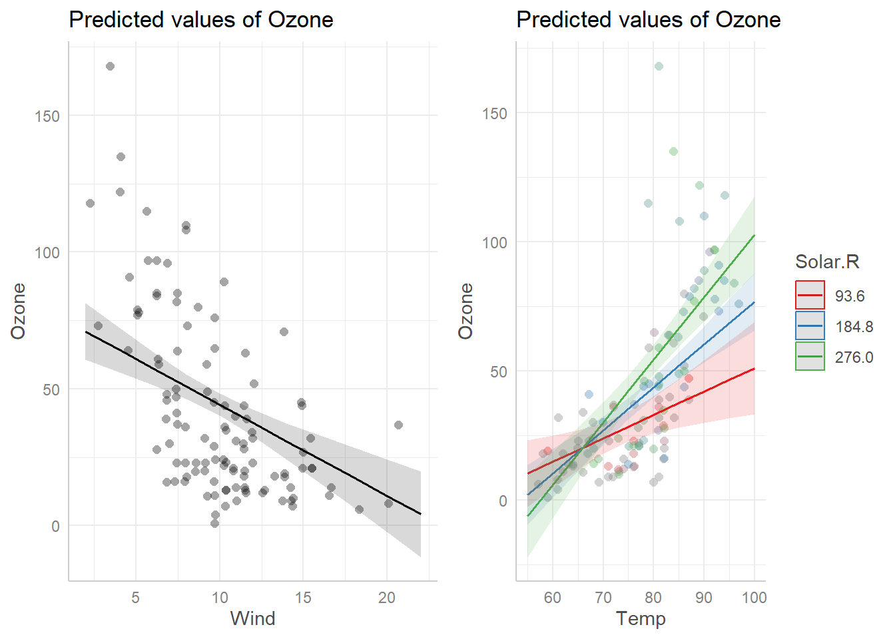
## Analysis of Variance Table
##
## Response: Ozone
## Df Sum Sq Mean Sq F value Pr(>F)
## Wind 1 45694 45694 112.708 < 2.2e-16 ***
## Solar.R 1 9055 9055 22.335 7.072e-06 ***
## Temp 1 19050 19050 46.988 4.901e-10 ***
## Solar.R:Temp 1 5028 5028 12.402 0.0006337 ***
## Residuals 106 42975 405
## ---
## Signif. codes: 0 '***' 0.001 '**' 0.01 '*' 0.05 '.' 0.1 ' ' 1## Single term deletions
##
## Model:
## Ozone ~ Wind + Solar.R * Temp
## Df Sum of Sq RSS AIC Pr(>Chi)
## <none> 42975 671.43
## Wind 1 11679.6 54654 696.12 2.393e-07 ***
## Solar.R:Temp 1 5028.2 48003 681.71 0.0004573 ***
## ---
## Signif. codes: 0 '***' 0.001 '**' 0.01 '*' 0.05 '.' 0.1 ' ' 1##
## Call:
## lm(formula = Ozone ~ scale(Wind) + scale(Solar.R) * scale(Temp),
## data = air_cleaned)
##
## Residuals:
## Min 1Q Median 3Q Max
## -39.634 -12.505 -2.300 8.956 94.162
##
## Coefficients:
## Estimate Std. Error t value Pr(>|t|)
## (Intercept) 39.996 2.002 19.976 < 2e-16 ***
## scale(Wind) -11.879 2.213 -5.367 4.74e-07 ***
## scale(Solar.R) 9.006 2.248 4.006 0.000115 ***
## scale(Temp) 15.844 2.297 6.898 3.98e-10 ***
## scale(Solar.R):scale(Temp) 7.216 2.049 3.522 0.000634 ***
## ---
## Signif. codes: 0 '***' 0.001 '**' 0.01 '*' 0.05 '.' 0.1 ' ' 1
##
## Residual standard error: 20.14 on 106 degrees of freedom
## Multiple R-squared: 0.6472, Adjusted R-squared: 0.6339
## F-statistic: 48.61 on 4 and 106 DF, p-value: < 2.2e-16Review the “brute-force z-test” code from the “Why focus on algorithms” lecture. Then complete the following exercises:
What if we wanted to run a two-tailed z-test? That is, what if our alternative hypothesis were that salmon fed on the new vegetarian diet could plausibly be larger or smaller than those fed on the conventional diet after one year?
Modify the function (“ztest_bruteforce()”) with a new argument that allows for both one and two-tailed tests! Name your new function “my_ztest()”.
To convince yourself that your new function works, try running your function for a (made-up) case where the observed body mass for those fed on the new diet are generally higher than the expected body mass for those fed on the conventional diet after one year – the opposite of your hypothesis!
NOTE: you may get tangled up with the null hypothesis/p-value concept, which is admittedly a difficult concept! A p-value always assumes the null hypothesis is true (what is the probability that a random sample under the null hypothesis could give as much evidence for your alternative hypothesis than the data you observed?).
Include your function in your submitted r script!
This function should be specified as follows:
Test your function using some alternative sample data values. For example:
mu = 4 # testing code
sigma = 2
mysample = c(3.14,3.27,2.56,3.77,3.34,4.32,3.84,2.19,5.24,3.09)
test = my_ztest(mysample, mu, sigma,alternative = 'l' )
str(test)## List of 3
## $ Xbar : num 3.48
## $ nulldist: num [1:10000] 4.84 3.72 5.25 3.43 4.23 ...
## $ p_value : num 0.207test$p_value## [1] 0.2072 # also try using the code from lecture to compare against a "real" z-test!Also try using the code from lecture to compare against a “real” z-test– for example:
mu = 4 # testing code
sigma = 2
mysample = c(3.14,3.27,2.56,3.77,3.34,4.32,3.84,2.19,5.24,3.09)
samplemean = mean(mysample) # real z-test
stderr <- sigma/sqrt(length(mysample)) # population standard error
zstat = (samplemean-mu)/stderr
pnorm(zstat)## [1] 0.203689test = my_ztest(mysample, mu, sigma,alternative = 'l' ) # compare your function with the real answer
test$p_value## [1] 0.204library(BSDA)## Loading required package: lattice##
## Attaching package: 'BSDA'## The following object is masked from 'package:datasets':
##
## Orangez.test(x=mysample,mu=mu, sigma.x=sigma,alternative = "less") # 'canned' z-test##
## One-sample z-Test
##
## data: mysample
## z = -0.82852, p-value = 0.2037
## alternative hypothesis: true mean is less than 4
## 95 percent confidence interval:
## NA 4.516297
## sample estimates:
## mean of x
## 3.476Non-parametric test of sample mean vs null
Now, what if we had access to a large set of independent samples under the null hypothesis AND that we would like to relax the assumption that the data follow a normal distribution under the null hypothesis?
In this exercise, you are asked to modify the brute-force z-test function so that you generate your sampling distribution by simply sampling from the known data set under the null hypothesis. To do this you can use the ‘sample()’ function in R. For this purpose you should sample from the null with replacement. Here is an example:
nulldata=c(2.2,3.86,6.39,4.6,3.43,5.16,4.36,4.22,6.31,4.61,5.13,4.12,4.64,4.03,5.01,7.33,5.35,4.7,2.82,4.87,3.87,5.95,5.28,4.02,3.58,4.03,5.38,5.5,3.07,3.29,3.45,5.25,5.7,1.26,5.28,4.19,4.76,4.2,4.81,2.5)
sample(nulldata,10,replace=T) # use the sample function to sample from a large vector with replacementFor this exercise, we will return to the original null hypothesis: that salmon raised on the new diet will be smaller (lower mass) than those raised on conventional diet after one year.
Include your function in your submitted r script!
This function should be named ‘x_vs_null()’ and should be specified as follows:
Test your function using some alternative sample data vectors. For example:
nulldata=c(2.2,3.86,6.39,4.6,3.43,5.16,4.36,4.22,6.31,4.61,5.13,4.12,4.64,4.03,5.01,7.33,5.35,4.7,2.82,4.87,3.87,5.95,5.28,4.02,3.58,4.03,5.38,5.5,3.07,3.29,3.45,5.25,5.7,1.26,5.28,4.19,4.76,4.2,4.81,2.5)
mysample = c(3.14,3.27,2.56,3.77,3.34,4.32,3.84,2.19,5.24,3.09)
test = x_vs_null(mysample, nulldata )
test$p_value## [1] 0.008Review the bootstrapping code from the first lecture topic (to generate confidence intervals for arbitrary test statistics). Then complete the following exercise:
Generate a new R function, called “RegressionCoefs()” that takes a data frame as the first input parameter and the name of the response variable as the second input parameter, and returns the regression coefficients (\(\beta\)) produced by regressing the response variable on each predictor variable one at a time (returning a vector of regression coefficients). You can use the “Rsquared()” function (from the lecture) as a reference!
More specifically, this function should be specified as follows:
Include your function in your submitted r script!
You can test your function using the following code:
RegressionCoefs(trees,"Volume") # should return two regression coefficients## Girth Height
## 5.065856 1.543350Generate a new R function, called “BootCoefs()” that meets the following specifications:
Include your function in your submitted r script!
You can test your function using the following code:
BootCoefs(df=trees,fun=RegressionCoefs,responsevar="Volume")## Girth Height
## 2.5% 4.362612 0.7690758
## 50% 5.027451 1.5358234
## 97.5% 5.632498 2.3628580df <- mtcars[,c(1,3,4,6)]
responsevar="mpg"
BootCoefs(df,RegressionCoefs,responsevar)## disp hp wt
## 2.5% -0.05132901 -0.10073301 -7.100329
## 50% -0.04119646 -0.06940640 -5.377683
## 97.5% -0.03146126 -0.04591232 -4.166714To test your new function(s), generate bootstrapped confidence intervals around the regression parameters for your tree biomass regression. Compare these bootstrapped confidence intervals with the standard confidence intervals given by R in the “lm()” function. Are there any important differences? Explain your answer in WebCampus.
———— End of Lab 1! ——————–